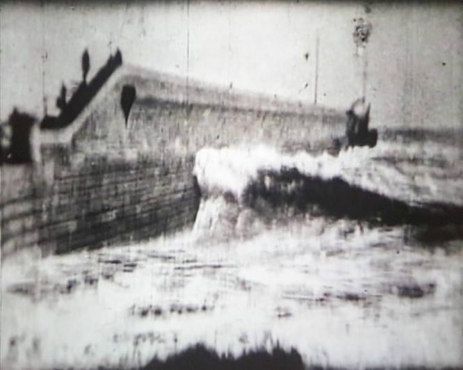

Rough Sea at Dover,
showing waves breaking over Admiralty Pier. Probably filmed in June
1895, with the Paul-Acres camera, and sent by Paul to Edison, who
showed to great acclaim in his 1896 Broadway debut show.
